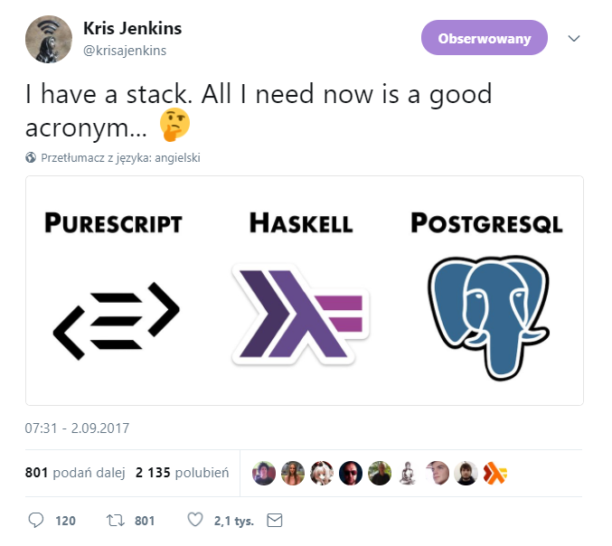

apps
with F# web stack
Tomasz Heimowski @theimowski
Agenda
- SAFE - big picture
-
Demo
- Overview
- Creating SAFE apps
- Building UI
- Client <-> Server communication
- Deploying
- Q&A
Slides available at http://theimowski.com/talk-safe-stack
Disclaimer
My goal
???



https://twitter.com/krisajenkins/status/903988761171820544
big picture
- Web stack
- Combines several OSS projects
- F# end-to-end
- Type-SAFE
- Cloud-ready
- Flexible

S for Saturn

- Web server
- ASP.NET Core, Kestrel & Giraffe
- MVC pattern

A for Azure

- Cloud provider

F for Fable

- F# to JavaScript compiler
- Babel JS

E for Elmish

- UI library
- inspired by Elm
Demo overview
Simple voting form
Creating SAFE project
Prerequisites:
- .NET SDK 2.1
- FAKE 5 as global .NET tool
- .NET Framework / Mono for Paket*
- Node.js
- Yarn or NPM
* removing this dependency is WIP
Creating SAFE project
- Install SAFE template:
dotnet new -i SAFE.Template - Create project from template:
dotnet new SAFE - Build & run:
fake build --target run - Wait for build to finish: app opens up in browser
Architecture
- Shared code
- Server side
- Client side
Building form
- Bulma (CSS Framework)
- Fulma - Bulma bindings for Elmish
- Landing Bulma Template
- Webpack + webpack-dev-server
Client side debugging
- Binding in "Elm Architecture" style
- Console trace
- Hot Module Replacement
- Redux-devtools (Time-travel debugger)
- React-devtools
Talking to server side
- Fable.Remoting
- Server refresh (dotnet watch)
- Triggering calls from Client side
Deploying the app
- Bundle
- Azure Resource Manager (ARM) Template
- Azure App Service
Next steps
- SAFE Docs - SAFE in a nutshell
-
Example apps
- SAFE BookStore - More complex + tests
- SAFE Nightwatch - React Native
- SAFE ConfPlanner - CQRS + Event-Sourcing
- Server-Side Rendering - Back-end React
- You?